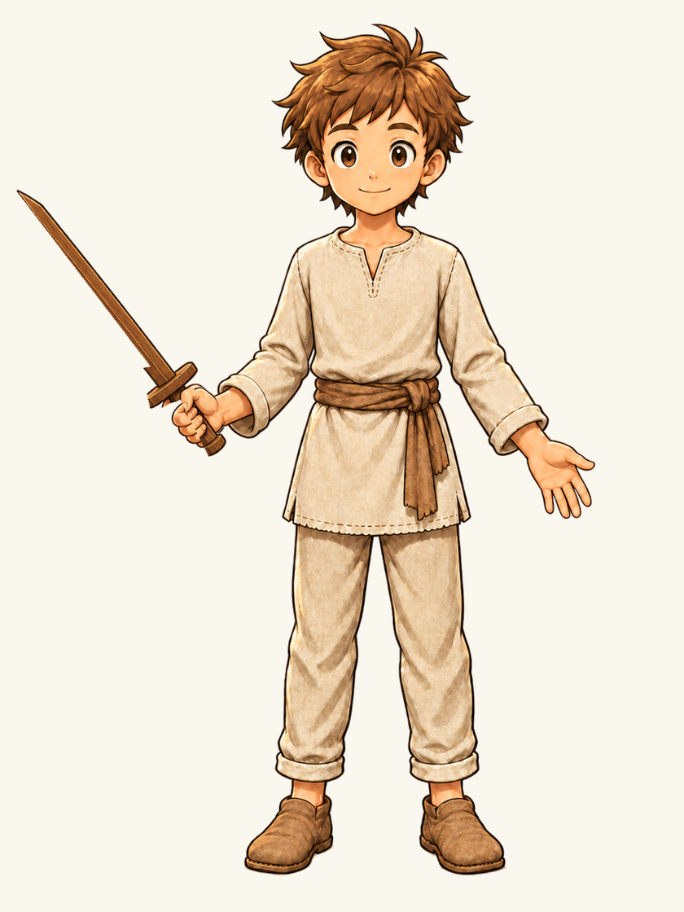

TECHNICAL CANDIDATE · OWNER VISUAL ACCEPTANCE REQUIRED RUNTIME_ACTIVE=NO · SOURCE PROTOTYPE ONLY · app.py and equipment authority unchanged.
Character: apprentice · Pose: ONE_HAND_SWORD_POSE_V1 · compatible prototype weapons: wooden_sword, iron_sword. The first two images are unannotated normal-size player-facing renders.
01 · wooden sword · unannotated normal player-facing render

02 · iron sword · unannotated normal player-facing render